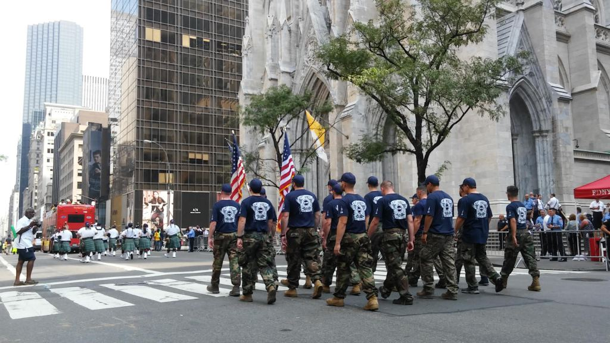
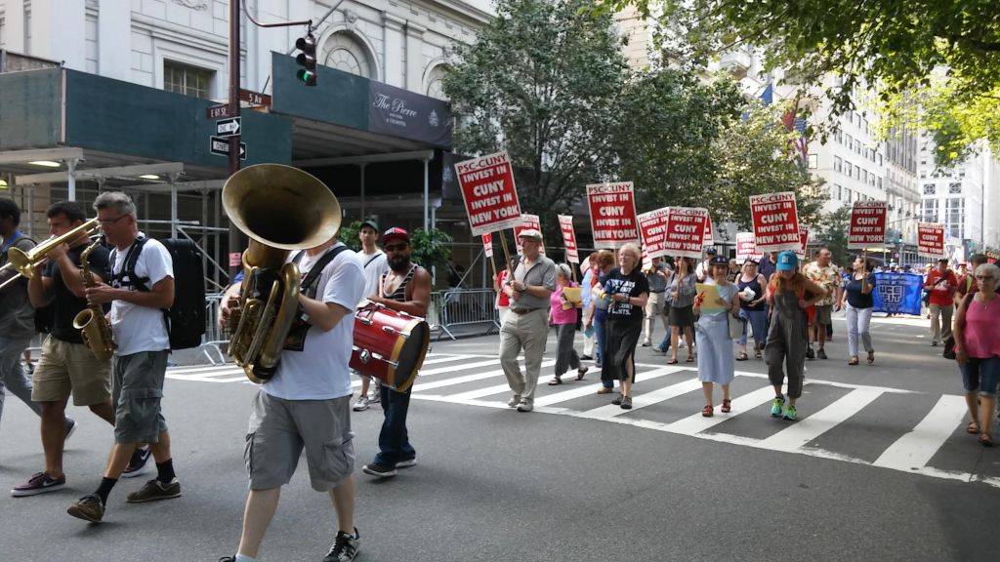

Suspect Still at Large
Sean Lally, a mechanical engineer at the World Trade Center, carried an American flag as he walked up 5th Ave. under the warm September sun. All around him were, what he called, his union brothers and sisters for the annual NYC Labor Day Parade on Saturday.
“I am standing together with my union brothers and sisters, keeping the middle class alive,” he said. “Enough of this corporate big money thing; enough with outsourcing. We have good and hard-working people here that need jobs.”
A member of the International Union of Operating Engineers Local 94, Lally joined the parade to protest outsourcing, promote local employment and support the labor movement.
At 10 a.m., more than 14 different unions from all across the city, including the American Federation of Teachers, the Communications Workers of America, the Civil Service Employees Association and the American Federation of State, County and Municipal Employees gathered at 44th St. All coming from vastly different professions but with a similar message: Keep the middle class alive.
Plumbers, journalists, engineers and teachers, like Joseph Usatch, a history teacher at The Essence School in Brooklyn, expressed concern about the current state of the middle class and felt that unions are the best solution to maintain local jobs intact.
“I’m here to support the labor movement and push for rights for the middle class” he said. “We’re making sure the middle class remains in this county.”
Usatch and the rest of the members of the United Federation of Teachers waved their distinctive blue and white umbrellas at Trump Tower on 56th St. while chanting Hillary Clinton’s name and asking for Republicans to “do better,’ since they felt that the current Republican nominee does not have the interests of the middle class at hand.
The protests in front of Trump Tower continued as the parade went on. People yelled obscenities, waved their signs and raised their fists at the building, that was being protected by police officers and private security alike. Chants such as “AFT for Hillary” by the American Federation of Teachers, “Dump Trump, he’s a bump,” and “Never Trump” broke out throughout the day, to the point where some onlookers would even join in. The discord between the so-called “labor movement” and the Republican nominee was loudest coming from the CWA, who spent 10 minutes facing off with the building
The City University of New York also made its presence known, as the Professional Staff Congress marched with a few members all holding signs that said “Invest in CUNY, invest in New York.” One of the members was Nivedita Majumdar, the secretary of PSC and a professor at John Jay College, who marched because “The labor movement is under attack in this country.” She felt that CUNY, as a public institution, should not depend on rising tuition for funding. “[CUNY] should serve the middle class and minorities, it should not be funded on the backs of CUNY students.”
Majumdar and her “brothers and sisters” walked to 63rd St., where they would be greeted by a small crowd, a jazz band and a stage where each union would be announced and cheered for to signal the end of their parade. After a polite clap from the spectators, the union would dissolve and join the festivities or get back to work, as Labor Day was on September 5 and not on the day of the parade.
The event ended at 1 p.m. when the last union met its eventual fate and the police opened 5th Ave. for the flow of traffic to resume. As New York taxis, buses and cars filled the previously clogged artery like red blood cells, they drove over leftover signs that said “Democracy depends on journalism,” “Thank you Governor Cuomo” and “Unions created weekends.”